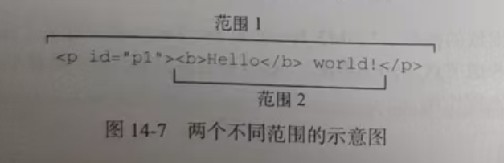

通过范围选择文档中某个部分最简单的方式 , 就是使用 selectNode() 或 selectNodeContents() 方法 。 包括其后代节点 , 而 selectNodeContents() 只选择节点的后代 selectNode(节点) 节点本身+所有子节点 selectNodeContents()只包含目标节点的所有子节点 。假设有如下HTML:
<p id="p1"><b>Hello</b> world!</p>
Hello world!
以下 javascript 代码可以访问并创建相应的范围:
let range1 = document.createRange(),
range2 = document.createRange(),
p1 = document.getElementById('p1')
range1.selectNode(p1)
range2.selectNodeContents(p1)
例子中的这两个范围包含文档的不同部分。range1包含<p>元素及其所有后代，而range2包含 <b>元素 , 文本节点'Hello' 和 文本节点" world!"
调用 selectNode() 时 ,startContainer、endcontainer 和 commonAncestorContainer 都等于传入节点的父节点 。在这个例子中，这几个属性都等于document.body。 startoffset属性等于 , 传入节点在其父节点 childNodes 集合中的索引 (在这个例子中 , startOffset 等于 1 , 因为DOM的合规实现把空格当成文本节点 ), 而endoffset等于startOffset加1 (因为只选择了一个节点与)
在调用 selectNodecontents()时, startcontainer, endcontainer 和i commonAncestorContainer,属性就是传人的节点、在这个例子中是 <p>元素 。startoffset 属性始终为 0 。 因为范围从传入节点的第一个子节点开始 , 而 endoffset 等于传入节点的子节点数量 (node.childNodes.length) 在这个例子中等于 2
在像上面这样选定节点或节点后代之后，还可以在范围上调用相应的方法，现对范围中选区的更精细控制
调用这些方法时，所有属性都会自动重新赋值。不过，为了实现复杂的选区，也可以直接修改这些属性的值。